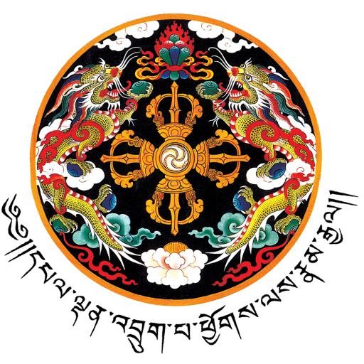

<!-- <div class="scroll-container">

    <section class="introdution" >    
        <div>   
         <h1 class="title">
             Compliance and Development Review of {{ lapName }}
         </h1>
     
         <div>
             
             
             
             </img-comparison-slider>
         </div>
     
        <div class="intro-divison">
         <div>
             
         </div>
         <div>
             <p>Interactive Compliance Review Dashboard</p>
             <p>Compliance and Development Review Division</p>
             <p>Department of Human Settlement</p>
             <p>Ministry of Works and Human Settlement</p>
         </div>
        </div>
         
     
        </div>
     </section>


     <section class="lap-details">
      
        <div id="map">
    
        </div>
        <div class="info">
            <p>
                <strong>T</strong>he dzong, covering an area of about 60 m2 (650 sq ft), has only one entry gate from the south while in the past it was on the west. 
                The dzong built over three floors is covered on the exterior at the lowest level with prayer wheels where there is also an array of 300
                 carvings made of slate which depict saints and philosophers. The main lhakhang (chapel) has a
                 large image of the Sakyamuni (Buddha), with images of eight bodhisattvas on both sides. There are many dark mural paintings within this 
                 lakhang which are said to be the oldest in Bhutan. The chapel to the west of the main Lhakahan has images of Chenresig, green and white
                  Taras (designated as both green and white). 
            </p>

            <p>
                <strong>T</strong>here is also an old painting of Zhabdrung Ngawang Namgyal, the founder of the dzong which 
                  was cleaned in 1995 but still shows signs of cracks. Also seen on the pillars of the eastern goenkhang are the tiger's tails and guns. 
                  There are chapels dedicated to the Yeshe Goennpo (Mahakala) and Pelden Lhamo, the protector deities of Bhutan.[1]In the genre of the Himlayan mural paintings of 
                  Himalayas, the cosmic mandala in the dzong is considered unique. It is a circle that is painted on the ceiling in the assembly hall or Tshogdu, within a square 
                  in the form of mountain ranges with yellow concentric squares. The circles within it are painted in several colours, making it distinctive, represents the twelve
                   months of the year. The path of the course of sun's movement is painted as a line in the form of an ellipse in brick red colour; moons are also represented.[6]
            </p>
           
            <div style="display: flex; flex-direction: row;">
               <div>
                <h3>  Total Plots <p>
                    {{totalPlots}} 
                </p></h3>
               </div>

             <div>
                <h3> Total LandArea <p>
                    {{totalLandArea}}
                </p></h3>
             </div>

             <div>
                <h3> Total Population <p>
                    {{totalLandArea}}
                </p></h3>
             </div>

            </div>
           
    
        </div>
     </section>
     
     
     
     <section class="development-status">
         
        <h2>Development Status</h2>
        <div id="developmentStatusMap">
                this is working
        </div>
    </section>

</div> -->


<header class="border-b md:flex md:items-center md:justify-between p-4 pb-0 shadow-lg md:pb-4">
  
    <!-- Logo text or image -->
    <div class="flex items-center justify-between mb-4 md:mb-0">
      <h1 class="leading-none text-2xl text-grey-darkest">
        <a class="no-underline text-grey-darkest hover:text-black" href="#">
          Site Title
        </a>
      </h1>
  
      <a class="text-black hover:text-orange md:hidden" href="#">
        <i class="fa fa-2x fa-bars"></i>
      </a>
    </div>
    <!-- END Logo text or image -->
    
    <!-- Search field -->
    <form class="mb-4 w-full md:mb-0 md:w-1/4">
      <label class="hidden" for="search-form">Search</label>
      <input class="bg-grey-lightest border-2 focus:border-orange p-2 rounded-lg shadow-inner w-full" placeholder="Search" type="text">
      <button class="hidden">Submit</button>
    </form>
    <!-- END Search field -->
    
    <!-- Global navigation -->
    <nav>
      <ul class="list-reset md:flex md:items-center">
        <li class="md:ml-4">
          <a class="block no-underline hover:underline py-2 text-grey-darkest hover:text-black md:border-none md:p-0" href="#">
            Products
          </a>
        </li>
        <li class="md:ml-4">
          <a class="border-t block no-underline hover:underline py-2 text-grey-darkest hover:text-black md:border-none md:p-0" href="#">
            About
          </a>
        </li>
        <li class="md:ml-4">
          <a class="border-t block no-underline hover:underline py-2 text-grey-darkest hover:text-black md:border-none md:p-0" href="#">
            Contact
          </a>
        </li>
      </ul>
    </nav>
    <!-- END Global navigation -->
  
  </header>